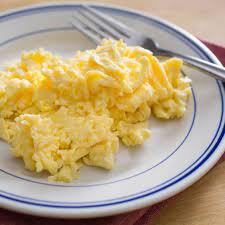

Scrambled Eggs Recipe

With this one were gonna go with a basic common food that people make pretty
often step by step.
- First you need to whisk eggs,salt and pepper in a bowl. While melting and
spreading around butter on a non stick skillet with medium heat.
- Pour in the egg mixture and reduce the heat a little, as the eggs begin to
set gently move spatula across bottom of skillet to make soft curds of egg.
- Cook eggs until they are thickened and no liquid from the egg is visible
then let it cool down and enjoy.
Thats pretty much all their is to making scrambled eggs as long as you have the basic tools and
the eggs you should be good to make it and enjoy.